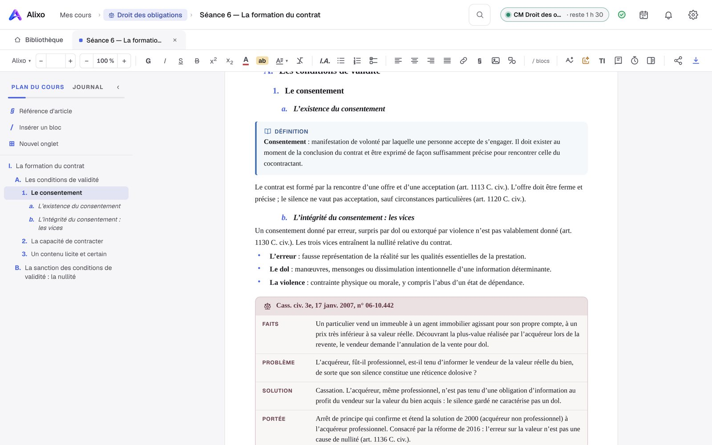

macOS
web
Prise de notes pour l’amphi — droit, économie, santé
Prends le cours.
Alixo fait le plan.
Le plan I. A. 1. a. se numérote tout seul, les fiches d’arrêt ont déjà leur trame, les formules et les quiz sont à un raccourci. Tout au clavier, même hors ligne — et c’est gratuit.

- le plan se construit tout seul
- encadré définition
- art. 1113 C. civ. → Légifrance
Sommaire
Fait pour le droit, l’économie, la médecine, la pharmacie, l’odontologie, la maïeutique, la kiné et les doubles licences. Gestion et commerce arrivent.
Tout au clavier, les yeux sur le prof.
Chaque bloc, chaque raccourci est pensé pour que tes mains restent sur le clavier pendant que l’amphi avance.
Le plan se numérote tout seul
Tu choisis le niveau, Alixo pose le bon numéro et tient le compte. Le plan du cours se construit en direct dans le volet de gauche, avec ta progression.
Spécimen — séance 6
- I. La formation du contrat
- A. L’offre et l’acceptation
- 1. Les caractères de l’offre
- a. La fermeté
Ctrl + Alt + 4 donne le niveau a.
Les fiches d’arrêt ont déjà leur trame
Faits, procédure, problème, solution, portée : la trame est prête. Tape « art. 1240 C. civ. » et Alixo propose le lien Légifrance.
| Faits | Une enfant de cinq ans, renversée… |
|---|---|
| Solution | Faute retenue sans discernement. |
| Portée | Objectivation de la faute civile. |
Les formules s’écrivent comme tu parles
Ctrl + E et tu écris naturellement : fractions, racines, matrices, limites, sommes, lettres grecques. Le rendu est instantané.
Tu tapes
e_p = (ΔQ/Q) / (ΔP/P)
Alixo affiche
Les courbes se déplacent à la souris
Offre, demande, équilibre, taxe, prix plafond : des courbes que tu déplaces à la souris, directement dans la page.
Et aussi
- Correction pendant la frappe. Orthographe et grammaire, gratuites pour tous : Tab accepte, Échap ignore.
- Recherche universelle. Ctrl + K fouille tous tes cours, planches, tableurs et fichiers en un instant.
- Fichiers à côté du cours. PDF, Word, PowerPoint, Excel, images, audio : glissés dans un dossier, ouverts dans Alixo.
- Agenda. Tes cours dans un calendrier ; pendant le cours, « + séance » ouvre la prise de notes du jour.
- Export PDF et Word. PDF propre avec sommaire, en-tête et date ; export Word fidèle ; fichiers .alx pour tout emporter.
- Hors ligne et synchronisé. Tes notes vivent sur ta machine et se synchronisent dès que tu retrouves du réseau.
Transforme ton cours en quiz, puis joue-le en amphi.

Seul avant le partiel, ou avec tout l’amphi
Révise seul avec chrono et score. Ou affiche un code : chacun répond depuis son téléphone, le classement bouge, les stats restent.
6 chiffres
suffisent pour rejoindre : alixoapp.com/quiz
Pourquoi pas juste Word ?
Un traitement de texte ne connaît ni ta filière, ni le rythme d’un amphi.
| Fonction | Alixo | Word / Docs | Notion / OneNote |
|---|---|---|---|
| Numérotation I. A. 1. a. automatique | oui | manuel | non |
| Fiches d’arrêt et fiches cliniques guidées | oui | non | non |
| Graphiques éco manipulables | oui | non | non |
| Formules tapées en langage naturel | oui | éditeur d’équations | LaTeX |
| Quiz en direct depuis le cours | oui | non | non |
| Recherche dans tous les cours et fichiers | oui | fichier par fichier | oui |
| Travail à plusieurs en direct | oui | oui | oui |
| Hors ligne complet | oui | selon l’abonnement | partiel |
| Prix | gratuit · Alixo+ en option | abonnement | freemium |
Tes notes restent chez toi.
AlixoAI relit ton cours, corrige tes fautes et te prépare à l’examen, directement dans Alixo. Aucun texte n’est envoyé à Alixo ni à un service tiers.
L’IA tourne dans l’application PC (Windows et Mac) : elle télécharge une seule fois, avec ton accord, un fichier de 1,1 à 2,5 Go.
- Correction : orthographe et grammaire proposées sous le paragraphe, Tab pour accepter.
- Quiz IA : des questions générées depuis ton cours, la première apparaît en quelques secondes.
- Fiches de révision : l’essentiel de la séance résumé, prêt à relire.
Comprise dans Alixo+, sans quota. La correction pendant la frappe est gratuite pour tous, sur tous les appareils.
L’essentiel est gratuit. Alixo+ pour aller plus loin.
Le compte gratuit suffit pour prendre tes cours. Alixo+ suit ton compte sur PC, Mac, web et téléphone ; AlixoAI, elle, travaille dans l’application PC (Windows et Mac).1
Gratuit
Sans limite de durée, sans carte
0 € sans limite de temps
- Cours, quiz, planches, présentations, tableurs, fichiers
- Structure I. A. 1. a., fiches d’arrêt, formules, graphiques
- Agenda, dictionnaire, export PDF et Word
- Partage de cours (Alixo Share) et travail à plusieurs en direct
- Synchronisation PC, Mac, web, mobile · 3 Go
- Thèmes clair, sombre, automatique · 3 polices
Alixo+
Tout le compte gratuit, plus :
14,99 €2 TTC par mois · ou 149,99 € TTC par an
Dégressif avec l’ancienneté, jusqu’à 9,99 € par mois après 24 mois. Annuel reconduit tacitement, résiliable à tout moment.3
- AlixoAI1 : relecture approfondie, mise en forme, Quiz IA et fiches de révision, sans quota, dans l’application PC (Windows et Mac)
- Tâches à faire : catégories, échéances, priorités, rappel du matin
- Tous les thèmes : Bleu galaxie, Nuit d’encre, Forêt, Ardoise, Azur…
- Toutes les polices : Georgia, Garamond, Cambria, Calibri, Verdana…
- Stockage au-delà de 3 Go
Conditions de l’abonnement
- AlixoAI fonctionne dans l’application PC (Windows et Mac) et télécharge une seule fois, avec ton accord, un fichier de 1,1 à 2,5 Go ; sa rapidité dépend de l’ordinateur. ↑
- Alixo+ : 14,99 € par mois ou 149,99 € par an (TTC), puis de moins en moins cher avec l’ancienneté, jusqu’à 9,99 € par mois ou 99,99 € par an : voir les tarifs. ↑
- Abonnement mensuel sans engagement, ou annuel reconduit tacitement chaque année ; résiliable à tout moment en ligne dans Paramètres › Alixo+, avec effet à la fin de la période payée. ↑
- Droit de rétractation de 14 jours, garantie légale de conformité et médiation : voir les conditions générales de vente. ↑
Alixo sur ton ordinateur. En un clic.
Tu cliques, le fichier se télécharge. Ou tu ouvres Alixo dans ton navigateur.
-
Windows
Windows 10 / 11Installation en une minute, mises à jour automatiques au démarrage.
Télécharger Alixo-Setup.exe85 MoVersion portable, sans installation
-
macOS
macOS 12 et plus, Intel et Apple SiliconMême application, même compte : tes cours pris ailleurs sont déjà là.
-
Navigateur
Chrome, Edge, Firefox, SafariRien à installer : la même application, idéale pour essayer ou pour la BU.
Questions fréquentes
1. Alixo est-il vraiment gratuit ?
Oui, l’essentiel l’est, sans limite de temps et sans carte : cours, quiz, planches, présentations, tableurs, dossiers, fichiers jusqu’à 3 Go, agenda, partage, dictionnaire, export PDF, synchronisation. Alixo+, en option, ajoute l’intelligence artificielle, les tâches, tous les thèmes et toutes les polices, et lève la limite de stockage.
2. L’IA lit-elle mes notes ?
Oui, uniquement le passage que tu lui soumets, au moment où tu demandes une correction, un quiz ou une fiche. Aucun texte n’est envoyé à Alixo ni à un service tiers, et tu peux désactiver AlixoAI dans Paramètres › IA. En savoir plus
3. Peut-on essayer sans rien installer ?
Oui. La version web (nouvel onglet) est la même application, dans ton navigateur, toujours au niveau de la version PC. Sur téléphone, la version mobile s’ouvre automatiquement. Avec un compte, tes cours sont partagés entre le web, le mobile et l’application PC.
4. Alixo existe-t-il sur Mac ?
Oui : une application universelle (Apple Silicon et Intel), avec le même compte et les mêmes cours que sur Windows et sur le web. Télécharge Alixo-Mac.dmg, glisse Alixo dans Applications, puis au premier lancement autorise l’ouverture une fois dans Réglages Système › Confidentialité et sécurité › « Ouvrir quand même » (autorisation demandée une seule fois). Les nouvelles versions sont signalées dans l’application.
5. Comment installer Alixo sur Windows ?
Clique sur « Télécharger » : Alixo-Setup.exe arrive dans tes téléchargements. Double-clique, suis l’installation, c’est tout. Si Windows SmartScreen affiche un avertissement (fréquent pour les applications récentes), clique sur « Informations complémentaires » puis « Exécuter quand même ». Une version portable, sans installation, est aussi disponible.
6. Mes notes sont-elles en sécurité ?
Tes cours restent les tiens. L’application travaille hors ligne sur ta machine, se synchronise avec ton compte, et tu peux exporter tes cours en PDF, Word ou .alx à tout moment.